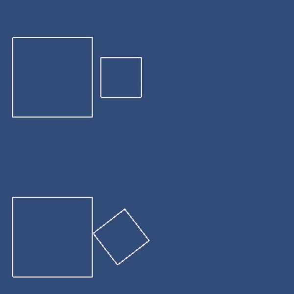
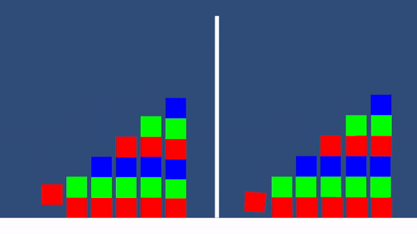
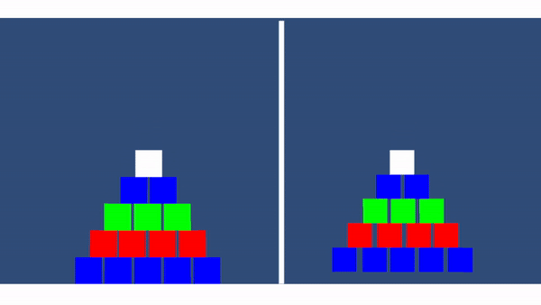
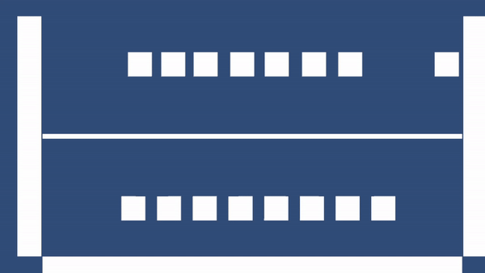

Unity Engine has a new feature called ECS for Unity. It enforces Data-Oriented Programming (DOP)
through certain restrictions on the entity query-update loop, such as the query-foreach syntax shown in the actual code snippet below.
My teammate and I set out to make a full-scoped game, but the ECS framework proved to be more challenging than initially thought, lacking a lot of features and providing no support for stable 2D physics. So, we decided to turn our project into a tech demo, with me doing the physics engine and my teammate doing finite-state-machine-based AI. To my surprise, there weren't that many great resources out there when it came to game physics. I've gotten help from Allen Chou, Kevin Yu, Erin Catto, and DigiPen Professor Erik Mohrmann.
My teammate and I set out to make a full-scoped game, but the ECS framework proved to be more challenging than initially thought, lacking a lot of features and providing no support for stable 2D physics. So, we decided to turn our project into a tech demo, with me doing the physics engine and my teammate doing finite-state-machine-based AI. To my surprise, there weren't that many great resources out there when it came to game physics. I've gotten help from Allen Chou, Kevin Yu, Erin Catto, and DigiPen Professor Erik Mohrmann.
foreach (var (physics, transform) in SystemAPI.Query<RefRW<DrawerPhysics>, RefRW<LocalTransform>>())
{
if (physics.ValueRO.enabled != 0)
{
// do collision stuff
}
else
{
// do gravity only
}
}Collision Detection
Separating Axis Theorem (SAT) can be used to detect if one convex polygon is penetrating another convex polygon. SAT will generate a penetrating point, penetration normal and depth.We can make an optimization here called Edge Collision. This is when the two edges in contact are parallel and therefore the two contact points can simply be treated as one, halving the processing needs and making the simulation more stable.

Collision Resolution
Collisions can be resolved by solving them for impulse (yes, the one we learned in physics class). I won't go into the nitty gritty details of how that works, but if you'd like to know more, this paper goes into how the impulse-based approach works.
Stability
Stability becomes important when there are constant contact points that are under constant pressure, as small errors in impulse can quickly accumulate over a few frames and end in a catastrophe. I've looked into it and chose to implement Sequential Impulses and Baumgarte Stabilization. These methods will prevent objects from sinking into each other or getting lodged.

Friction
In addition, we should also be mindful of another type of impulse: Tangential Impulse exerted by friction. Sequential impulse and Baumgarte stabilization can make a tower stable, but a structure like a pyramid would also require precise tangential impulse to stay still.An overview of stability and friction can be found here.

Conclusion
In this article, I have showcased my implementation of a 2D physics engine that handles everything better than the built-in ECS physics engine. The only regret I have is that I didn't have time to implement optimizations such as (1) making the code compatible with the Burst Compiler's requirements for low-level optimization, and (2) implementing Sort and Sweep for the broad phase collision detection. But I didn't let that stop me from enjoying this nice little Newton's Cradle!
